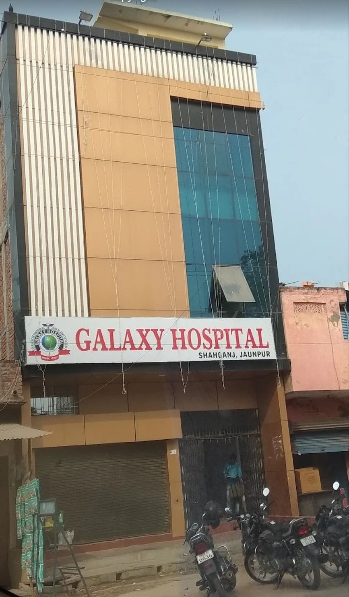
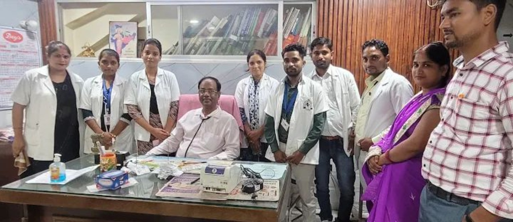
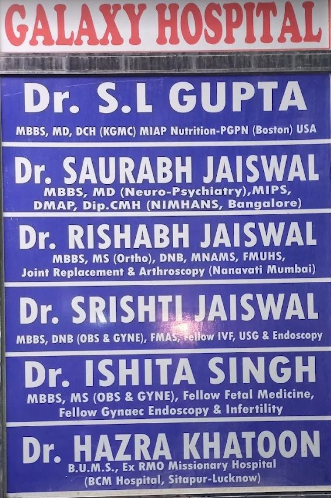
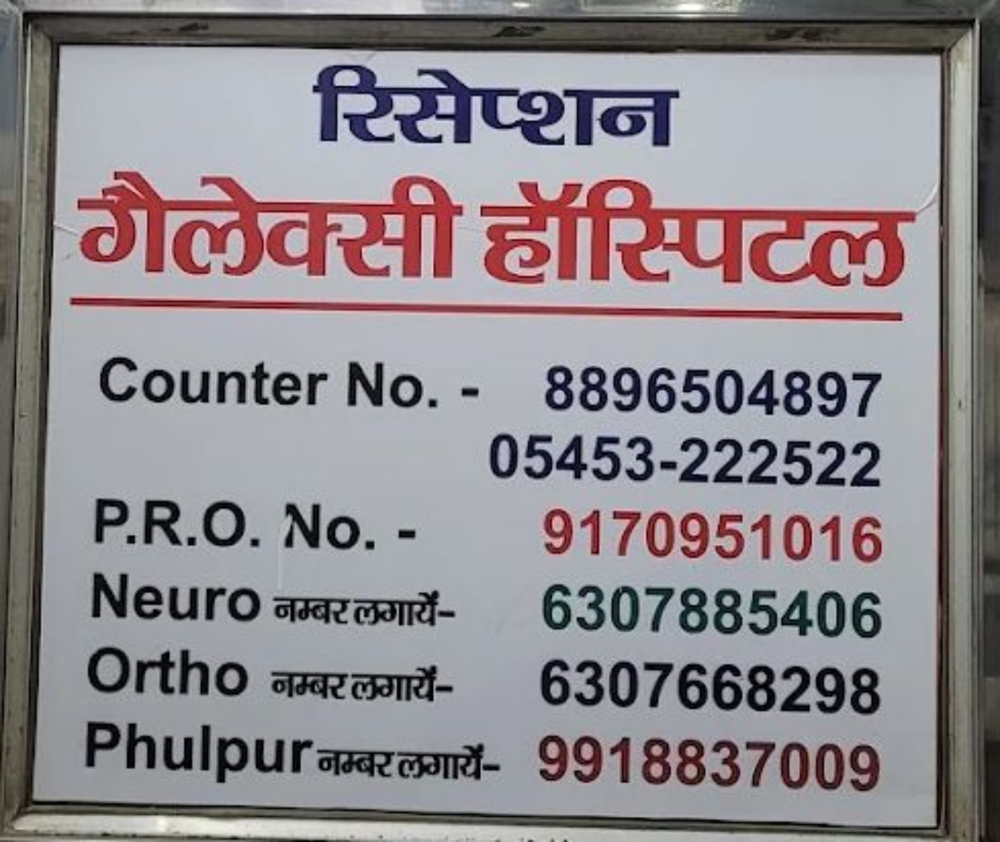

👶
Child Health
Paediatrics and child nutrition qualifications are listed on the doctor board.
Hospital information and contact details for patients and families in Shahganj, Jaunpur.

Shahganj, Jaunpur, Uttar Pradesh
See the names and qualifications shown on the hospital board.
This first demo uses the real hospital photos and boards provided to us. Hospital services, timings and emergency facilities should be confirmed by the hospital before the website goes live.
The following areas are based on qualifications printed on the supplied board, not a separate confirmation of current availability.
Paediatrics and child nutrition qualifications are listed on the doctor board.
A doctor’s board lists qualifications in Neuro-Psychiatry.
Orthopaedic and joint replacement qualifications are listed on the board.
Women’s health, gynaecology and related qualifications are listed.
Additional listed qualifications include fetal medicine and infertility.
Please call the hospital to confirm doctor availability, appointment times and services.
Real photographs supplied for this demo. Individual doctor portraits can be added when provided.

Hospital staff group photo supplied by the client.

Names and qualifications are displayed as printed on the supplied board. Please verify spelling, credentials and current visiting schedule before publication.
Use the phone numbers shown on the hospital’s supplied contact board.
